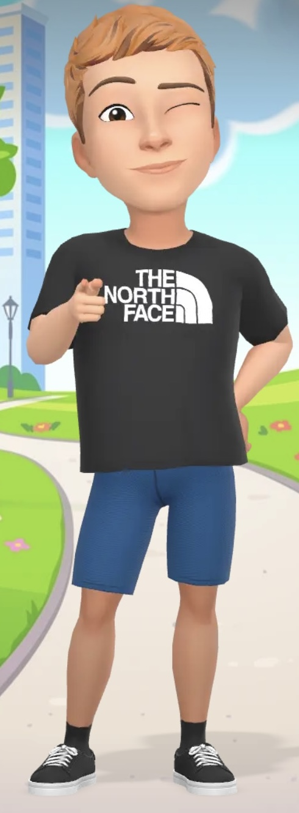
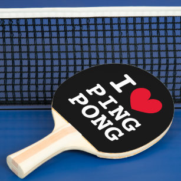
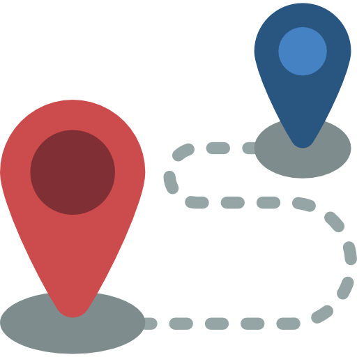

Qui suis-je ? 
Erwan MENARD, passionné de Tennis de Table, d'Informatique et de Développement Web. J'ai eu l'opportinuté de réaliser un Service Civique dans mon club de Tennis de Table de Pins-Justaret Villate. J'ai saisi cette opportunité pour allier ma passion avec un engagement concret dans un domaine qui me tient à cœur.
Pourquoi ce club ? 
Étant moi-même adhérent de ce club de Tennis de Table depuis plusieurs années, j'ai toujours voulu apporter une contribution positive à cette association. Le choix de faire mon Service Civique au sein de ce club est né de cette envie d'aider tout en mettant à profit mes compétences en informatique.
Mon objectif était clair : améliorer les outils numériques du club, notamment en participant à leur site internet et en développant un logiciel de gestion des équipes pour les compétitions. Ce projet me permet non seulement de soutenir le club, mais aussi de renforcer mes compétences professionnelles dans un cadre qui me passionne.
Mon Parcours :
En parallèle de mon Service Civique, je poursuis des études en informatique me permettant d'acquérir des connaissances solides en développement web, en gestion de bases de données et en programmation. Mon Service Civique m'a permis de mettre en pratique mes compétences dans un contexte réel.
Mes Objectifs :
Je souhaitais développer des outils facilitant la gestion quotidienne du club, tout en contribuant à son
rayonnement à travers un site internet moderne et fonctionnel.
Je souhaitais, également, que mon engagement puisse inspirer d'autres jeunes à s'investir dans des projets
qui allient "passion et compétences".